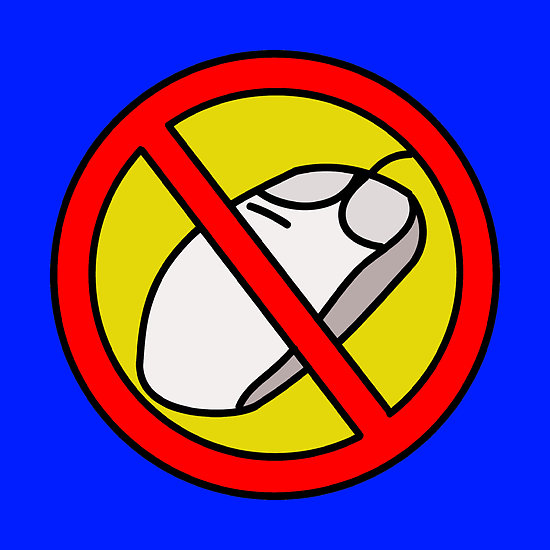
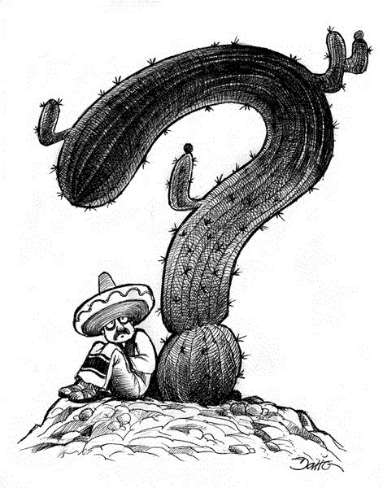
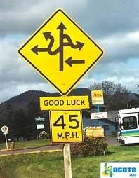
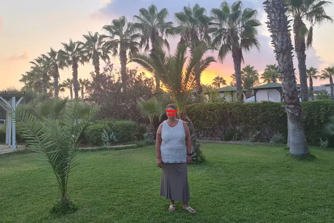

3 Textualitätskriterien
3.0.1 Textualitätsbegriff
Was versteht man unter Textualität?
Textualität ist die Gesamtheit der wesenhaften Merkmale von Texten. Textualität (oder Textur) kann sich aber auch auf den Text als Gebilde (als Produkt) beziehen.
Vertextung ist ein Begriff, mit dem man sich auf den Textproduktions- oder rezeptionsprozess (Textaufbau, Textbildung oder Textkonstitution) bezieht.
In welchen Fällen liegt nach Ihrer derzeitigen Auffassung ein Text vor?
- Nicht-Texte oder Texte an der Grenze?


Welche Eigenschaften machen Texte spezifisch, so dass Sie nicht beliebig füreinander austauschbar sind und eine verschiedene Interpretation notwendig machen?

Ich bin 50 Jahre, 172 groß und paar kg mehr. Ich suche einen Ehrlichen, Treuen, Zufährlässlichen Partner (keine Affären oder Ons) Er sollte 50 bis 58 sein. Bitte nur ernstgemeinte Anfragen.
Brigitte
Standort 1110 Wien, Simmering
Ad-ID: 263214
Zuletzt aktualisiert: 18.09.2022 14:55
Merkel-Porträt aus dem Jahr 2000 Das eiserne Mädchen Wer das Geheimnis von Angela Merkel ergründen will, muss mit ihr von Krisensitzung zu Krisensitzung ziehen und dorthin gehen, wo sie herkommt. Eine preisgekrönte Reportage aus dem Jahr 2000, wiederentdeckt zum 70. SPIEGEL-Geburtstag. Von Alexander Osang 28.01.2017, 07.55 Uhr
Manchmal muss sie noch mal zurück in diese Stadt, die so gut passt zu Kohls Ehrenwort, zu Weyrauchs verrostetem Garagentor, zu Leisler Kieps Einstecktuch, zu Kanthers Frisur, noch mal zurück in dieses Bonner Konrad-Adenauer-Haus, wo man einen dieser Siebziger-Jahre-Sexfilme drehen könnte, ohne ein einziges Möbelstück zu verrücken. Nach der Pressekonferenz will sie schnell weg, schnell nach Berlin, der Rückflug ist ausgebucht, alle sind in der Maschine, nur sie steht noch im Warteraum und telefoniert. Sie weiß, in einer Stunde, in Berlin, kann alles anders sein. Sie hört, dass Kohl heute abend im Fernsehen spricht. Sie schaltet ihr Handy ab und sagt leise: “Er schlägt zurück. Heute schlägt er zurück.”
Am Abend sieht Angela Merkel Helmut Kohl im Fernsehen. Sie ist zu Besuch bei Freunden und fragt, ob die was dagegen haben. Nein, denn Kohl gucken gehört inzwischen dazu. Es ist spannend. Kohl marschiert in das ZDF-Studio wie ein General. Thomas Bellut vom ZDF knallt die Hacken zusammen. Er fragt nach Angela Merkel.
Er sei nicht hierher gekommen, um über Angela Merkel zu reden, sagt Kohl. Und dann redet er. Wie ein betrogener Liebhaber. Oder ein enttäuschter Vater.
Die Tür öffnet sich am Rande von Templin, es ist die Tür des letzten Hauses in einer kurzen Sackgasse. Horst Kasner ist überraschend groß und überraschend aufrecht für einen 74-jährigen Pfarrer. Er trägt ein graues Cordjeans-Hemd, hat breite Schultern, aber sein linkes Auge ist trübe. Als ich anbiete, die Schuhe auszuziehen, lacht er. Man erkennt jetzt die Tochter in seinen Zügen. Auch die Art, wie er die Arme schwingt, vorfreudig irgendwie, könnte sie von ihm geerbt haben. Die Frage ist, worauf er sich freut. … …
https://www.spiegel.de/geschichte/angela-merkel-portraet-aus-dem-jahr-2000-das-eiserne-maedchen-a-1131489.html1
3.1 Konstitutive Kriterien der Textualität
Beaugrande/Dressler (1992:12ff) unterscheiden sieben konstitutive Textualitätskriterien, die bei jedem Text erfüllt sein müssen.
Textzentrierte Kriterien:
- Kohäsion
- Kohärenz.
Verwenderzentrierte Kriterien:
- Intentionalität
- Akzeptabilität
- Informativität
- Situationalität
- Intertextualität.
3.1.1 Kohäsion
Dieses Merkmal reflektiert die Zusammengehörigkeit von Oberflächeneinheiten eines Textes und beruht auf grammatischen Abhängigkeiten.
- Paul hat angerufen. Er sagt, er kommt morgen.
- A: Ich liebe dich. - B: Ich dich auch.
- Paul hat angerufen. Paul war sehr aufgeregt.
- O Grab ! o Wundergrab! dem alle Gräber weichen! …
O Grab! das einst begrub die Leiche aller Leichen!
(Ausschnitt aus Das unbegreifliche Jesusgrab von Quirinus Kuhlmann)
- Brüderchen und Schwesterchen
- Kahn kritisierte seinen Chef. Er wurde entlassen.
- Kahn kritisierte seinen Chef. Deshalb wurde er entlassen.
- Kahn kritisierte seinen Chef. Danach wurde er entlassen.
3.1.2 Kohärenz
Kohärenz = Kontinuität des Inhalts, inhaltliche Zusammengehörigkeit von Textteilen.
- Die Wetterlage in Europa hat sich in den vergangenen Tagen völlig verändert. Wie aber soll sie von wenig Geld eine Haushaltshilfe bezahlen? Allerdings will kein Meteorologe einen Pfennig darauf verwetten, daß wir nun auch von Juni an mit Sonne rechnen können.
Kohärenz: bei de Beaugrande & Dressler nur semantisch-kognitive Zusammenhänge von Texten (z .B. Kausalitäts-, Zeit- und Referenzbeziehungen).
Die Textwelt, ist ihrerseits durch eine Sinnkontinuität bestimmt: Im Gegensatz zur Bedeutung (der Fähigkeit oder des Potentials eines Ausdrucks, Wissen darzustellen oder zu übermitteln) bezeichnen die beiden Autoren mit Sinn das Wissen, das tatsächlich durch die Ausdrücke innerhalb eines Textes übermittelt wird. Die Sinnkontinuität ist Grundlage der Kohärenz. Eine solche dem Text zugrundeliegende Konstellation (d. h. die Gesamtheit der einem Text zugrundeliegenden Sinnbeziehungen) ist die Textwelt, die mit der realen Welt nicht unbedingt übereinstimmen muss. Es handelt sich vielmehr um die vom Sprecher, von seinem Wissen und seinen Intentionen zugrundegelegte Textwelt.
Konzepte sind in der Psychologie bzw. Kognitionswissenschaft angenommene Einheiten unseres Wissenssystems, die sich aufgrund von Wahrnehmung und Erfahrung dort gebildet haben und die nicht unbedingt ein getreues Abbild der realen Welt ergeben. Eine Diskrepanz zwischen der Konzept-Konstellation in der Textwelt und unserem Wissen führt dazu, dass wir keine Sinnkontinuität herstellen können. Der betreffende Text ist für uns sinnlos. Wenn Konzepte aktiviert werden, meint man damit, dass sie aus dem Langzeitgedächtnis in den aktiven Gedächtnisspeicher geladen werden.
3.1.3 Intentionalität
I. = Einstellung (Attitüde) des Textproduzenten, einen kohäsiven und kohärenten Text zu bilden, um damit Wissen zu verbreiten oder ein in einem Plan angegebenes Ziel zu erreichen.
- George W. Bush mit einem republikanischen Senator bei einer Wahlkampagne:
Widersprüche, Intentionalität als notwendiges Textualitätskriterium zu fordern (Vater 1992: 50):
(a) Intentionalität: Voraussetzung für jede Art von (bewußter) Kommunikation.
(b) Obwohl Kohärenz und Kohäsion unabhängige Kriterien sind und nicht Teil eines anderen Textualitätskriteriums sein können, verweist der Intentionalitätsbegriff auf diese beiden und macht sie zu Kriterien, die an Intentionalität gebunden sind.
(c) Äußerungskomplexe, die wir intuitiv als Texte auffassen, in denen der Textproduzent jedoch nicht Kohäsion und/oder Kohärenz intendiert. Die Inkohärenzen der in Texten vorkommenden Sprecher stört nicht die Kohärenz des Gesamttextes, sondern können sogar dazu gehören. Darin zeigt sich die Abhängigkeit des Kohärenzbegriffs von der Textsorte.
3.1.4 Akzeptabilität
A. = Einstellung des Textrezipienten, einen kohäsiven und kohärenten Text zu erwarten, der für ihn nützlich oder relevant ist. Akzeptabilität bezieht sich außerdem auf die Angemessenheit der verwendeten Sprachmittel, d. h. auf Sprachvariation im weiteren Sinne.
- Ein alltägliches Bild in den Straßen des Ruhrgebiets: eine Mutter, ein Kind und Pommes Frites. Im Büdchen an der Ecke kauft die Frau Mama eine Portion Pommes Frites.
Kind: Mamma, gib mich dat Pommes.
Mutter: Du dummer Bengel ! Dat heißt: Gib mich dat Pommes, BITTE !
Ein Hühnerzüchter schreibt an eine landwirtschaftliche Forschungsstelle:
“Es geht um meine Hühner. Jeden Tag finde ich einige von ihnen mit dem Kopf im Sand und mit den Beinen nach oben. Was ist mit ihnen los?” Nach 14 Tagen kommt die Antwort: “Ihre Hühner sind tot.”Gespräch in der Straßenbahn.
“Können Sie mir sagen, wie spät es ist?”
“Moment”, sagt der andere und zieht eine Banane aus der Tasche.
Er wirft einen Blick darauf und sagt: “Donnerstag.”
“Du lieber Himmel, da hätte ich ja an der vorigen Haltestelle Aussteigen müssen!”Ein Schweizer, ein Schwabe und ein Berliner sitzen im Zugabteil.
Der Schweizer zum Berliner: “Sind Sie schou z’Züri gsi?”
Der Berliner kann mit dem letzten Wort nichts anfangen und fragt zurück: “Gsi?”
Da greift der Schwabe hilfreich ein: “Er moint gwää.”Italiens Premier Berlusconi über die Anhänger der Opposition vor der damaligen Parlamentswahl in Italien (2006):
Einwände (Vater 1992: 52-54):
(a) Akzeptabilität: allgemeine Voraussetzung für erfolgreiches Kommunizieren.
(b) Subjektivität: für den einen akzeptabel, für den anderen dagegen nicht.
(c) Akzeptabilitätsbegriff zu eng eingegrenzt.
3.1.5 Informativität
I. = Ausmaß der Erwartetheit bzw. Unerwartetheit, Bekanntheit oder Unbekanntheit, Gewissheit oder Ungewissheit der dargebotenen Textelemente. Das richtige Maß an Informativität eines Textes ist abhängig von Intention, Erwartung und Situation.
I. = außerdem als Thematizität verstanden. Keine athematischen Texte; sprachlich sehr stark reduzierte Dialoge durch implizite Thematizität gekennzeichnet sein.
- E = m*c2
- um herauszufinden ob eine Konversation ein Gespräch oder eine Geschwätz ist, haben wir die ABC-Analyse verwendet, d.h. aufschreiben, ob wieviele wichtige Fachbegriffe vorkommen (welche Themen werden angeschnitten), wichtig hierbei ist zu schauen ob es Wörter mit Inhalt sind oder nur Plastikwörter und zum anderen die 4 Maximen von Grice. Ich hoffe das hat dich geholfen.
Einwände Vater (1992: 56): Informativitätsbegriff einschränken: Informativität sei zu definieren als das Ausmaß der Erwartetheit bzw. Unerwartetheit von Zeichen aus einem Zeicheninventar, das dem Rezipienten bekannt ist.
3.1.6 Situationalität
S. = Gesamtheit der Faktoren, die einen Text für eine kommunikative Situation relevant machen.
- Langsam spielende Kinder
- Die Morphologie-Vorlesung fällt heute aus.
Beispiel (19) nur durch situative Faktoren interpretierbar, denn grammatisch sind ist ein solcher Text oft nicht eindeutig. Beispiel (20): Erwartungen von Germanistik- und Medizinstudenten bezüglich Morphologie-Vorlesung (Knochenbau vs. Wortstruktur).
3.1.7 Intertextualität
I. = Bezug eines Textes auf andere Texte und deren Geprägtheit als Elemente einer bestimmten Textsorte bzw. Textklasse.
Intertextualität im Sinne (a), d. h. die Textsorte, ergibt sich aus einem Geflecht verschiedener Faktoren und Merkmale: Intention, Form, Situation usw.
Intertextualität im Sinne (b), d. h. der Bezug auf andere Textvorkommen, spielt in der Literatur (Belletristik) eine große Rolle: z. B. Kabarett Schwarz - weiß - tot.
3.2 Gesamtheit der Textualitätskriterien
Vater (1992: 64-66): Führt nur die Gesamtheit der Textualitätskriterien zu Textualität, um von einem “Text” sprechen zu dürfen?
- Intentionalität und Akzeptabilität sind fragwürdige Textualitätskriterien, weil sie Voraussetzung für jegliche Kommunikation sind und nicht nur sprachlicher.
- Akzeptabilität ist relativ: das gleiche sprachliche Gebilde kann von einem Textrezipienten als Text akzeptiert werden, von einem anderen dagegen nicht. Letzteres ist beispielsweise bei moderner Lyrik oft der Fall.
- Situationalität trägt zur Textualität bei, aber ist ein nicht situations-adäquates sprachliches Äußerungsgeflecht kein Text? Vater (1992: 64) scheint es in bestimmten Fällen angemessener, zu behaupten, dass jemand zwar einen Text gebildet habe, aber halt keinen situationsangemessenen Text.
- Kohäsion ist zwar wichtig und fehlt relativ selten in Texten, aber es gibt Äußerungsgeflechte, die durchaus ohne Kohäsionsmittel auskommen und dennoch kohärent sein können, denn man erkennt, dass ein Thema abgehandelt wird.
- Kohärenz stellt offenbar das dominierende Textualitätskriterium dar. Auch wenn alle anderen postulierten Kriterien nicht erfüllt sind, kann es sich um einen Text handeln - solange das Gebilde kohärent ist. Bestimmte Äußerungsgeflechte zeigen zudem, dass Kohärenzbeziehungen vom Text-Thema dominiert werden.
- Thema: eine nichtsprachliche Größe, die erst durch den Text versprachlicht wird und in einen bestimmten Wissenszusammenhang eingebettet ist. Da Textkohärenz an die Wissenssysteme des Textproduzenten und des Textrezipienten gebunden ist, erweist es sich als schwierig, die Textkohärenz zu bestimmen, und somit die Grenze zwischen Text und Nicht-Text als problematisch. Kohärenz = Eigenschaft, die an Leistungen und Urteilen von Rezipienten gebunden.
- Scherners Auffassung (1984: 148), Kohärenz aufzufächern in:
(a) textbezügliche Konsistenzbedingungen (weil “Wörter schon etwas mitbringen, bevor sie zur kommunikativen Verwendung gelangen”) und
(b) Textbenutzer-bezogene Kohärenzbedingungen. Die Konsistenzbedingungen unter (a) betreffen die semantisch–syntaktischen Regularitäten der Vertextung, die Bedingungen unter (b) “die darüber hinausgehenden Sinnerstellungsoperationen und -voraussetzungen des jeweiligen Rezipienten” Scherner (1984: 149; nach Vater 1992: 66).
Kontinuum:
Prototypische Texte <—-> Nicht-prototypische Texte
3.3 Regulative Textprinzipien
Die konstitutiven Prinzipien bestimmen und erzeugen eine natürliche Verhaltensform, die als Textkommunikation erkennbar ist. Daneben werden von de Beaugrande & Dressler (1992) aber auch regulative Prinzipien, die die Textkommunikation regeln, jedoch nicht definieren: Effizienz, Effektivität, Angemessenheit, möglicherweise noch mehrere.
3.3.1 Effizienz
Die Effizienz eines Textes steigt, wenn der Arbeitsaufwand von Textproduzent und Textrezipient bei der Textverwendung (d.h. beim Produzieren und beim Dekodieren) möglichst klein ist.
3.3.2 Effektivität
Die Effektivität eines Textes hängt davon ab, ob ein Text beim Rezipienten einen starken Eindruck hinterlässt und günstige Verhältnisse für die Erreichung eines vom Textproduzenten (und möglicherweise auch vom Textrezipienten) angestrebten Ziels schafft.
3.3.3 Angemessenheit
Die Angemessenheit eines Textes folgt aus der Art, wie die Textualitätskriterien in Wirklichkeit an die Situation angepasst sind.
Weitere Spiegel-Reportagen: https://www.spiegel.de/reise/fernweh/bangkok-was-die-demonstrationen-fuer-touristen-bedeuten-a-943253.html, https://www.spiegel.de/auto/aktuell/finale-in-le-mans-motorrad-langstrecken-wm-2013-a-923908.html, https://www.spiegel.de/geschichte/familie-eines-fixers-heute-setz-ich-mir-den-todesschuss-a-1144782.html↩︎